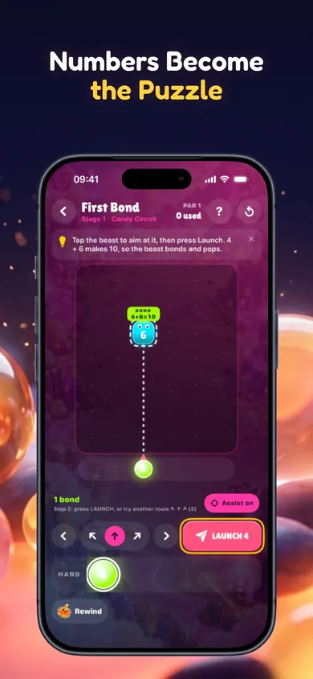

No timer here. No sign-up. Four numbers to compare.
Interactive rule illustration
Which number clears both?
A straight route hits 5, then 8. Each beast needs a total of 10 to clear. Pick a starting number.
?→5→?→8
Choose a starting number. Watch what carries past the first beast.
A simplified publisher-created illustration of the rules. This is not the app's playable board or physics engine; it has no aiming, obstacles or progression.
01 / FEED
Too small? The beast grows.
Launch 4 into 5: the total is 9. The beast stays and becomes 9. The shot ends there.
02 / BOND
Exactly ten? It clears.
Launch 5 into 5: that beast clears. The number is fully used, so the next beast is untouched.
03 / BRIDGE
Over ten? Use the carry.
Launch 7 into 5: the beast clears and 2 keeps going. The next target decides whether that carry helps.
Why look one move further?
The biggest number isn't always the cleanest answer.
In the example, 9 clears the 5 and carries 4. That 4 clears the 8, but leaves 2 unused. The game calls unused carry a spill: it falls back as a new beast. Choosing 7 uses the whole route without that remainder.
That's the appeal for a puzzle player: compare outcomes, then launch. The turn-based Bond Lab gives you room to plan; the listing also describes a separate faster arcade mode.

Actual App Store image. The rule illustration above is separate.
Take the idea into a real board
Angles. Obstacles. One more possibility.
The app listing describes 45 solver-checked stages across three worlds, aim assistance and a Daily Lab generated on your device. Later boards add mirrors, converters, splitters and other rules.
Beast Workshop lets you build a puzzle, use its solver and share a code. This page covers only the basic target-ten carry rule, so the full game has more to explore.
Listed as free, with no ads, accounts or in-app purchases. iPhone and iPad · iOS/iPadOS 18 or later
Before you download
Is this only for children?
The App Store rating is 4+, but that is a content rating, not a statement that the puzzles are only for children. Adults who enjoy arithmetic and planning can try the example and judge whether the core idea appeals to them.
Is it a reflex game or a planning game?
Bond Lab is turn-based. The app also includes a real-time Arcade Adventure. If you want to consider each launch, begin with Bond Lab.
Can the app work offline?
The current listing says the whole game works offline, including on-device Daily Lab generation and the built-in Workshop solver.
What if arithmetic puzzles aren't my thing?
The game relies on sums and planning. If you want a word puzzle or a game with no arithmetic at all, this is probably not the right choice.
See the carry. Then choose the shot.
Try all four numbers above. If comparing their outcomes is satisfying, explore the full boards in Number Beasts.